我们之前介绍了线性关系的线性表，层次关系的树形结构，下面我们来介绍结点之间关系任意的结构，图。
一、相关概念
1，图是由顶点的有穷非空集合和顶点之间边的集合组成，通常表示为G(V,E)，其中，G表示一个图，V是图G中顶点的集合，E是图G中边的集合。
2，各种图定义
若两顶点之间的边没有方向，则称这条边为无向边Edge，用无序偶对(v1,v2)来表示。如果图中任意两个顶点之间的边都是无向边，则称该图为无向图。
若从顶点v1到v2的边有方向，则称这条边为有向边，也称为弧（Arc），表示为有序偶<v1,v2>，称v1为弧尾，v2为弧头。若图中任意两个顶点之间的边都是有向边，则称该图为有向图。
注意无向边用(),有向边用<>
图按照边或弧的多少分为稀疏图和稠密图，但划分边界比较模糊。任意两个顶点之间都存在边叫完全图，有向的叫有向完全图。若无重复边或顶点回到自身的边的叫做简单图。
图上边或弧带权则称为网。
3，图的顶点与边之间的关系
图中顶点之间有邻接点Adjacent的概念，v和v‘相邻接，边(v,v')依附于顶点v和v’，或者说边(v,v')与顶点v和v’相关联。顶点的度Degree是与v相关联的边的数目，记作TD（v）。
有向图中有入度ID(v)和出度OD(V)的概念.
图中的顶点间存在路径则说明是连通的，如果路径最终回到起始点则成为环，不重复的路径称为简单路径。顶点不重复出现的回路，叫做简单回路或简单环。
若任意两点之间都是连通的，则成为连通图，有向则是强连通图。图中有子图，若子图极大连通则称该子图为连通分量，有向的则称为强连通分量。
无向图是连通图且n个顶点有n-1条边则叫做生成树。有向图中一顶点入度为0，其他顶点入度为1的叫做有向树，一个有向图可以分解为若干有向树构成的生成森林。
二、图的抽象数据类型
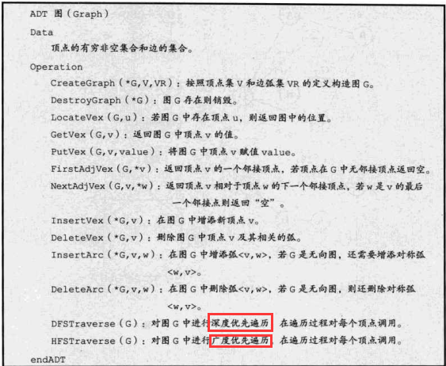
三、图的存储结构
图结构比较复杂，任意两个顶点之间都可能存在联系，因此无法以数据元素在内存中的物理位置来表示元素间的关系；而多重链表的方式又有操作的不便，因此对于图来说，它实现物理存储是个难题，下面我们来看前辈们已经提供的五种不同的存储结构
1，邻接矩阵
图的邻接矩阵存储方式是用两个数组来表示图。一个一维数组存储图中顶点信息，一个二维数组（称为邻接矩阵）存储图中的边或弧的信息。若无向图中存在这条边，或有向图中存在这条弧，则矩阵中的该位置置为1，否则置0.如下
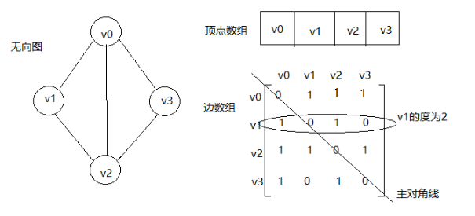
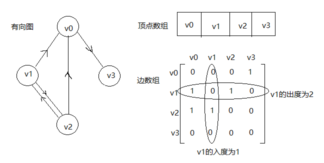
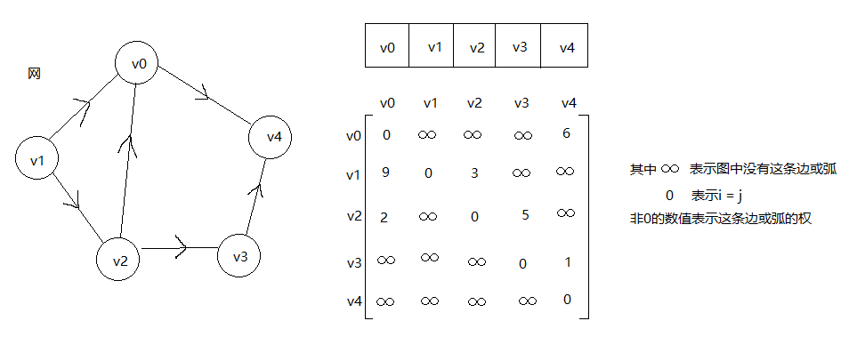
邻接矩阵是如何实现图的创建的呢？ 代码如下
/*
顶点的包装类
*/
public class Vertex<T>{
private T data;
public Vertex(T data){
this.data = data;
}
public T getData() {
return data;
}
public void setData(T data) {
this.data = data;
}
}
import java.util.ArrayDeque;
import java.util.LinkedList;
import java.util.Queue;
import Stack.ArrayStack;
import Stack.LinkedStack;
/*
邻接矩阵实现图的创建
*/
public class MGraph<T> {
private boolean flag; //若为true 则为有向图，否则为无向图
private Vertex<T>[] vertexs;
private int[][] edges;
private int numVertex; //顶点的实际数量
private int maxNumVertex; //顶点的最大数量
private int INFINITY = 65535;
public MGraph(int maxNumVertex, boolean flag){
this.maxNumVertex = maxNumVertex;
numVertex = 0;
this.vertexs = (Vertex<T>[]) new Vertex[maxNumVertex];
this.edges = new int[maxNumVertex][maxNumVertex];
initEdges();
this.flag = flag;
}
private void initEdges(){
for (int i = 0; i < maxNumVertex; i++) {
for (int j = 0; j < maxNumVertex; j++) {
edges[i][j] = INFINITY;
}
}
for (int i = 0; i < maxNumVertex; i++) {
edges[i][i] = 0;
}
}
public int getNumVertex(){
return numVertex;
}
public int getMaxNumVertex(){
return maxNumVertex;
}
public boolean isFull(){
return numVertex == maxNumVertex;
}
public void addVertex(T data){
if(isFull()){
throw new RuntimeException("图满了");
}
Vertex<T> v = new Vertex<T>(data);
vertexs[numVertex++] = v;
}
/**
* 删除图中与data相等的顶点
* @param data 要删除的顶点的data值
* @return 返回删除了几个顶点
*/
public int removeVertex(T data){
int flag = 0;
for (int i = 0; i < numVertex; i++){
if (vertexs[i].getData().equals(data)){
for (int j = i; j < numVertex - 1; j++){
vertexs[j] = vertexs[j + 1];
}
//删除矩阵的第 i 行
for (int row = i; row < numVertex - 1; row++){
for (int col = 0; col < numVertex; col++){
edges[col][row] = edges[col][row + 1];
}
}
//删除矩阵的第 i 列
for (int row = 0; row < numVertex; row++){
for (int col = i; col < numVertex - 1; col++){
edges[col][row] = edges[col + 1][row];
}
}
numVertex--;
flag++;
}
}
return flag;
}
private int getIndexOfData(T data){
int i = 0;
while (!vertexs[i].getData().equals(data)){
i++;
}
if (vertexs[i].getData().equals(data)) {
return i;
}else {
throw new NullPointerException();
}
}
/**
* 若为无向图，data的顺序随意；若为有向图，则添加的边是data1指向data2
* @param data1 弧尾
* @param data2 弧头
* @param weight 权值
*/
public void addEdge(T data1, T data2, int weight){
if (flag) {
int index1 = getIndexOfData(data1);
int index2 = getIndexOfData(data2);
edges[index1][index2] = weight;
}else {
int index1 = getIndexOfData(data1);
int index2 = getIndexOfData(data2);
edges[index1][index2] = weight;
edges[index2][index1] = weight;
}
}
public void removeEdge(T data1, T data2){
int index1 = getIndexOfData(data1);
int index2 = getIndexOfData(data2);
edges[index1][index2] = INFINITY;
}
public void printMatrix(){
for (int row = 0; row < numVertex; row++){
for (int col = 0; col < numVertex; col++){
System.out.print(edges[row][col] + "\t");
}
System.out.println();
}
} 邻接矩阵可以解决图的物理存储，但我们也发现，对于边相对顶点来说较少的图，这种结构是存在对存储空间的极大浪费的。如何解决呢？看下面
2，邻接表
我们在前面提到过，顺序存储结构存在预先分配内存可能造成空间浪费的问题，于是引出了链式存储结构。我们用类似于前面树结构中孩子表示法的方式，数组与链表相结合的存储方法称为邻接表。
处理方法：顶点用一维数组存储；每个顶点的所有邻接点构成一个线性表，用单链表存储。有向图称为顶点v的边表；无向图称为顶点v作为弧尾的出边表。
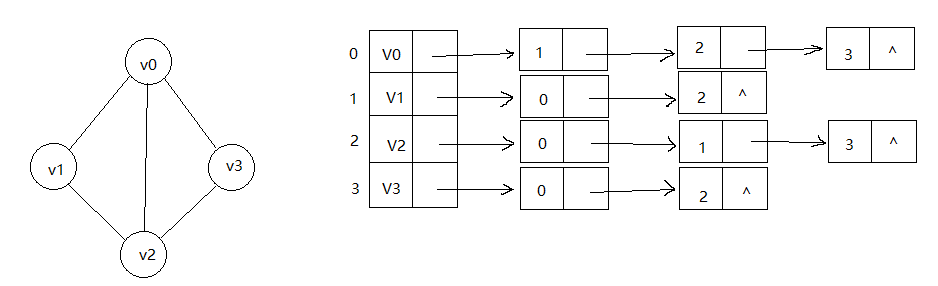
注：若是有向图，邻接表结构是类似的。由于有向图有方向，我们是以顶点为弧尾来存储边表的，这样很容易得到每个顶点的出度。但也有是为了便于确定顶点的入度，我们可以建立一个有向图的逆邻接表，即对每个顶点v1都建立一个链接为v1为弧头的表。
若是带权值的网图，可以在边表结点的定义中再增加一个weight的数据域，存储权值信息即可。
下面是邻接表存储图结构的代码实现
public class VertexL<T> {
private T data;
private EdgeL firstEdge;
public VertexL(T data)
{
this.data = data;
}
public void setFirstEdge(EdgeL e){
this.firstEdge = e;
}
public EdgeL getFirstEdge(){
return firstEdge;
}
public T getData(){
return data;
}
}public class EdgeL {
private int adjvex; //存储邻接点对应的下标
private EdgeL nextEdge; //存储
public EdgeL(int adjvex){
this.adjvex = adjvex;
}
public EdgeL(int adjvex, EdgeL e){
this.adjvex = adjvex;
this.nextEdge = e;
}
public EdgeL getNextEdge(){
return nextEdge;
}
public void setNextEdge(EdgeL e){
this.nextEdge = e;
}
public int getAdjvex(){
return adjvex;
}
}/*
无向图（无权值）的邻接表存储。
*/
public class GraphAdjList <T>{
private VertexL<T>[] vertexs;
private int numVertex;
private int maxNumVertex;
public GraphAdjList(int maxNumVertex){
this.maxNumVertex = maxNumVertex;
this.vertexs =(VertexL<T>[]) new VertexL[maxNumVertex];
numVertex = 0;
}
public boolean isFull(){
return numVertex == maxNumVertex;
}
private int getNumVertex(){
return numVertex;
}
/**
* 添加顶点
* @param data
*/
public void addVertex(T data){
if (isFull()){
throw new IndexOutOfBoundsException();
}
VertexL<T> v = new VertexL<T>(data);
vertexs[numVertex++] = v;
}
/**
* 添加边
* @param data1
* @param data2
*/
public void addEdge(T data1, T data2){
int indexOfData1 = getIndex(data1);
int indexOfData2 = getIndex(data2);
if (vertexs[indexOfData1].getFirstEdge() == null){
vertexs[indexOfData1].setFirstEdge(new EdgeL(indexOfData2));
}else {
vertexs[indexOfData1].getFirstEdge().setNextEdge(new EdgeL(indexOfData2, vertexs[indexOfData1].getFirstEdge().getNextEdge()));
}
if (vertexs[indexOfData2].getFirstEdge() == null){
vertexs[indexOfData2].setFirstEdge(new EdgeL(indexOfData1));
}else {
vertexs[indexOfData2].getFirstEdge().setNextEdge(new EdgeL(indexOfData1, vertexs[indexOfData1].getFirstEdge().getNextEdge()));
}
}
private int getIndex(T data){
int i = 0;
for (; i < numVertex; i++){
if (data.equals(vertexs[i].getData())){
break;
}
}
if (!data.equals(vertexs[i].getData()) && i == numVertex){
throw new NullPointerException();
}
return i;
}
/**
* 删除边
* @param data1
* @param data2
*/
public void removeEdge(T data1, T data2){
int indexOfData1 = getIndex(data1);
int indexOfData2 = getIndex(data2);
VertexL v = vertexs[indexOfData1];
EdgeL e = v.getFirstEdge();
if (e.getAdjvex() == indexOfData2){
if (v.getFirstEdge().getNextEdge() == null) {
v.setFirstEdge(null);
}else {
v.setFirstEdge(e.getNextEdge());
}
}else {
while (e.getNextEdge().getAdjvex() != indexOfData2){
e = e.getNextEdge();
}
if (e.getNextEdge().getNextEdge() != null) {
e.setNextEdge(e.getNextEdge().getNextEdge());
}else {
e.setNextEdge(null);
}
}
}
/**
* 删除顶点
* @param data
*/
public void removeVertex(T data){
int index = getIndex(data);
for (int i = 0; i < numVertex; i++){
if (i == index){
continue;
}
removeEdge(vertexs[i].getData(), data);
}
for (int i = index; i < numVertex - 1; i++){
vertexs[i] = vertexs[i + 1];
}
}
3，十字链表
对于有向图来说，邻接表只关心了出度问题，想了解入度就必须遍历整个图才能知道；反之，逆邻接表解决了入度问题，却不了解出度的情况。那么能不能把邻接表和逆邻接表结合一下呢？
这就是下面要讲的存储方式：十字链表。
我们既然要结合邻接表和逆邻接表，就要先把顶点域融合一下如下
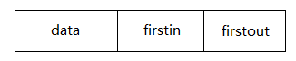 firstin表示入边表表头指针，指向该顶点入边表的第一个结点； firstout表示出边表表头指针，指向该顶点出边表的第一个结点。
下面我们来把边表结点结构也融合一下
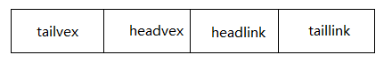其中tailvex是指弧起点在顶点表的下标 ； headvex是指弧终点在顶点表中的下标。
headlink是入边表指针域，指向同一个弧头的弧；taillink是出边表指针域，指向同一个弧尾的弧。 从新的边表结点的域可以看出来，每一个边表结点既承担了作为入边表的职责，也承担了作为出边表结点的职责。
例如下面这个例子
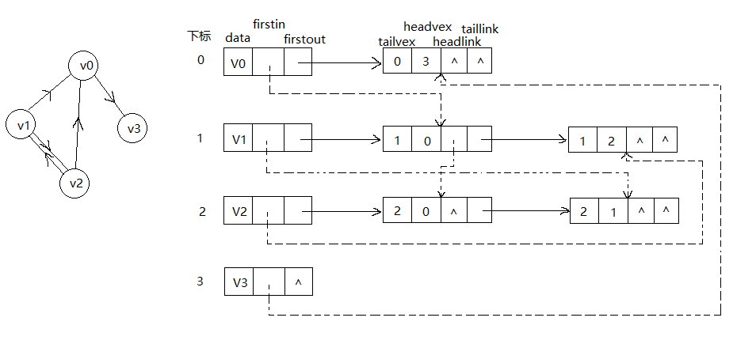
图中虚线箭头的含义就是此图的逆邻接表的表示。我们可以简单的理解为，比如第一行的边结点，就是表示从0指向3的有向弧，所以它一定是由0直接指向，并且由3虚线指向的。
再如图中唯一连续指向的从V0指向边10，再指向边20，可以发现弧头为0的都在同一列，弧尾同的都在同一行；由于V0有两个入度，所以虚线连续指向两个边结点。
十字链表的好处是因为结合了邻接表和逆邻接表，既容易找到入度，也容易找到出度。除了结构复杂一点，它创建图算法的时间复杂度是和邻接表相同的。因此在有向图中，十字链表是非常好的数据结构。
代码实现如下：
/*
十字链表实现的图结构的弧定义
*/
public class EdgeOL {
private int tail;
private int head;
public EdgeOL(int tail, int head) {
this.tail = tail;
this.head = head;
}
}
/*
十字链表实现的图结构的顶点定义
*/
public class VertexOL<T> {
private T data;
private EdgeOL firstIn;
private EdgeOL firstOut;
public VertexOL(T data) {
this.data = data;
}
}/*
图结构的十字链表实现
*/
public class GraphOrthogonalList<T> {
private VertexOL<T>[] vertexs;
private int numVertex;
private int maxNumVertex;
public GraphOrthogonalList(int maxNumVertex){
this.maxNumVertex = maxNumVertex;
vertexs = (VertexOL<T>[])new VertexOL[maxNumVertex];
}
public boolean isFull(){
return numVertex == maxNumVertex;
}
/**
* 添加新顶点
* @param data 新顶点的数据域
*/
public void addVertex(T data){
if (isFull()){
return;
}
VertexOL<T> v = new VertexOL<>(data);
vertexs[numVertex++] = v;
}
public void addEdge(int tail, int head){
EdgeOL e = new EdgeOL(tail, head);
//头插法，形成十字链表
e.setTailLink(vertexs[tail].getFirstOut());
vertexs[tail].setFirstOut(e);
e.setHeadLink(vertexs[head].getFirstIn());
vertexs[head].setFirstIn(e);
}
/**
* 删除一个边结点
* @param tail
* @param head
*/
public void removeEdge(int tail, int head){
removeFromTailList(tail, head);
removeFromHeadList(tail, head);
}
/**
* 从邻接表中删除一个边结点
* @param tail
* @param head
*/
private void removeFromTailList(int tail, int head){
EdgeOL e = vertexs[tail].getFirstOut();
//从tailLink中删除它
if (e != null && e.getHeadVex() == head){
//如果e是第一个但不是最后一个结点，删除它
if (e.getTailLink() != null){
vertexs[tail].setFirstOut(e.getTailLink());
}else {
//如果e是第一个也是最后一个结点，删除它
vertexs[tail].setFirstOut(null);
}
}else if (e != null){
//如果e不是第一个结点，那么遍历链表找到要删除的边结点的上一个结点！！
while (e.getTailLink() != null && e.getTailLink().getHeadVex() != head){
e = e.getTailLink();
}
if (e.getHeadVex() != head){
//throw new NullPointerException();
//这里不能抛异常，因为后面要遍历删除边，抛异常会使程序终止
return;
}else {
e.setTailLink(e.getTailLink().getTailLink());
}
}
}
/**
* 从逆邻接表中删除一个边结点
* @param tail
* @param head
*/
private void removeFromHeadList(int tail, int head){
//从headLink中删除它
EdgeOL e = vertexs[head].getFirstOut();
if (e != null && e.getTailVex() == tail){
//如果e1是第一个但不是最后一个结点，删除它
if (e.getHeadLink() != null){
vertexs[head].setFirstIn(e.getHeadLink());
}else {
//如果e1是第一个也是最后一个结点，删除它
vertexs[head].setFirstIn(null);
}
}else if (e != null){
//如果e1不是第一个结点，那么遍历链表找到要删除的边结点的上一个结点！！
while (e.getHeadLink() != null
&& e.getHeadLink().getTailVex() != tail){
e = e.getHeadLink();
}
if (e.getTailVex() != tail){
//throw new NullPointerException();
return;
}else {
e.setHeadLink(e.getHeadLink().getHeadLink());
}
}
}
/**
* 删除index角标的顶点
* @param index
*/
public void removeVertex(int index){
if (index >= numVertex){
throw new NullPointerException();
}
//删除与该顶点有关的所有边
for (int i = numVertex - 1; i > 0; i--){
removeEdge(index, i);
removeEdge(i, index);
}
//删除该结点
for (int i = index; i < numVertex - 1; i++){
vertexs[i] = vertexs[i + 1];
}
numVertex--;
}
}4，邻接多重表
上面的三种结构看似已经解决了所有问题，但在编写代码的时候才能体会到，插入顶点，插入边时非常方便，但删除时很麻烦。如何解决呢？ 有时又要对已访问的边做标记，又怎么做呢？
下面我们来看面向无向图的邻接多重表。
我们把邻接表中的边表结点的结构进行改造如下
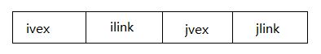
其中ivex和jvex是与某条边依附的两个顶点在顶点表中的下标。ilink指向依附顶点ivex的下一条边，jlink指向依附顶点jvex的下一条边。这就是邻接多重表。
注意：ilink指向的结点的jvex和它本身的ivex值相同
下面举例
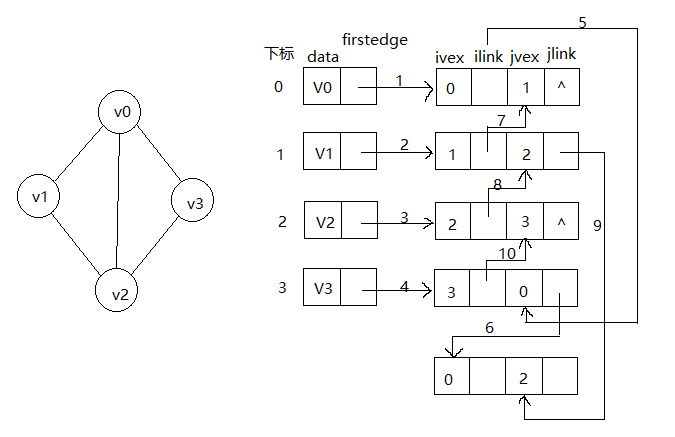
若要删除左图（v0 , v2）这条边，仅需让6 ， 9这两个链接改为^即可，删除方便了很多。
上面这种方法是《大话数据结构》中的画法，它 “貌似” 限制了ivex和jvex的顺序，使得在代码实现上难以思考。我找到了下面这个视频，是一个很好的邻接多重表的解释，（咖喱英语警告）。它没有限制ivex必须指向相同的jvex，没有限制ivex和jvex的顺序，也没有限制数组中的顶点结点只能指向一个边结点，更灵活，更好理解，代码也更容易实现。
https://www.youtube.com/watch?v=f2z1n6atBsc
下面是视频中画法的代码实现。
/*
邻接多重表的顶点定义
*/
public class VertexAM<T> {
private T data;
private EdgeAM firstEdge;
public VertexAM(T data){
this.data = data;
}
public T getData() {
return data;
}
public void setData(T data) {
this.data = data;
}
public EdgeAM getFirstEdge() {
return firstEdge;
}
public void setFirstEdge(EdgeAM firstEdge) {
this.firstEdge = firstEdge;
}
}/*
邻接多重表的边结点定义
*/
public class EdgeAM {
private int ivex;
private int jvex;
private EdgeAM ilink;
private EdgeAM jlink;
public EdgeAM(int ivex, int jvex){
this.ivex = ivex;
this.jvex = jvex;
}
public int getIvex() {
return ivex;
}
public void setIvex(int ivex) {
this.ivex = ivex;
}
public int getJvex() {
return jvex;
}
public void setJvex(int jvex) {
this.jvex = jvex;
}
public EdgeAM getIlink() {
return ilink;
}
public void setIlink(EdgeAM ilink) {
this.ilink = ilink;
}
public EdgeAM getJlink() {
return jlink;
}
public void setJlink(EdgeAM jlink) {
this.jlink = jlink;
}
}/*
邻接多重表的代码实现
*/
public class GraphAM <T>{
private VertexAM<T>[] vertexs;
private int numVertex;
private int maxNumVertex;
public GraphAM(int maxNumVertex){
this.maxNumVertex = maxNumVertex;
this.vertexs = (VertexAM<T>[])new VertexAM[maxNumVertex];
numVertex = 0;
}
public boolean isFull(){
return numVertex == maxNumVertex;
}
public void addVertex(T data){
if (isFull()){
return;
}
vertexs[numVertex++] = new VertexAM<>(data);
}
/**
* 将新结点连在iLink链表的链尾和jLink链表的链尾
* @param ivex
* @param jvex
*/
public void addEdge(int ivex, int jvex){
EdgeAM e = new EdgeAM(ivex, jvex);
if (vertexs[ivex].getFirstEdge() == null) {
vertexs[ivex].setFirstEdge(e);
} else if (vertexs[jvex].getFirstEdge() == null){
vertexs[jvex].setFirstEdge(e);
} else {
EdgeAM ptr = vertexs[ivex].getFirstEdge();
while (ptr.getIlink() != null){
ptr = ptr.getIlink();
}
ptr.setIlink(e);
ptr = vertexs[jvex].getFirstEdge();
while (ptr.getJlink() != null){
ptr = ptr.getJlink();
}
ptr.setJlink(e);
}
}
/**
* 删除边，如果边结点直连顶点结点，则直接删除；若不直连，先找到边结点的上一个边结点，然后将上一个边结点的link域置空。
* @param ivex
* @param jvex
*/
public void removeEdge(int ivex, int jvex) {
if (vertexs[ivex].getFirstEdge() != null && vertexs[ivex].getFirstEdge().getJvex() == jvex) {
vertexs[ivex].setFirstEdge(null);
} else if (vertexs[jvex].getFirstEdge() != null && vertexs[jvex].getFirstEdge().getIvex() == ivex) {
vertexs[jvex].setFirstEdge(null);
} else {
removeFromLink(ivex, jvex);
removeFromLink(jvex, ivex);
}
}
private void removeFromLink(int ivex, int jvex){
EdgeAM ptr = vertexs[ivex].getFirstEdge();
if (ptr == null){
return;
}
while (ptr.getIlink() != null && ptr.getIlink().getJvex() != jvex) {
ptr = ptr.getIlink();
}
if (ptr.getIlink() == null){
return;
}else {
ptr.setIlink(null);
}
}
/**
* 先删除与本顶点相连的所有边，然后再删除顶点
* @param index
*/
public void removeVertex(int index){
for (int i = 0; i < numVertex; i++){
removeEdge(i, index);
removeEdge(index, i);
}
for (int i = index; i < numVertex - 1; i++){
vertexs[i] = vertexs[i + 1];
}
numVertex--;
}
}5，边集数组
边集数组由两个一维数组构成，一个存储顶点的信息；另一个存储边的信息，这个边数组每个数据元素由一条边的起点下标（begin）、终点下标（end）和权（weight）组成。
边集数组的效率并不高，它适合对边依次进行处理的操作，而不适合对顶点进行相关的操作。边集数组的应用将在后面的克鲁斯卡尔（Kruskal）算法中有介绍。
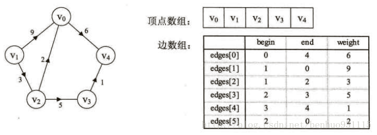
四、图的遍历
图的遍历是和树的遍历类似，我们希望从图中某一顶点出发仿遍图中其余顶点，且使每一个顶点仅被访问一次，这一过程就叫做图的遍历（Traversing Graph）
1，深度优先遍历（Depth_First_Search DFS）
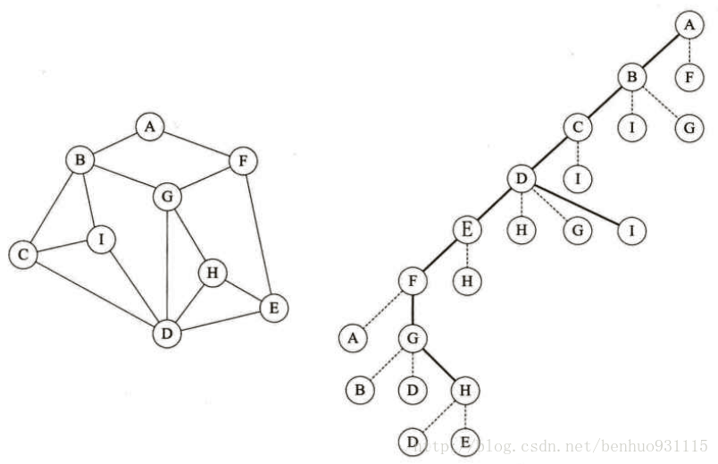
我们以上图为例，假设我们从A出发，只要没碰到访问过的结点，就一直往右手边走，先到B，再到C，再到D，E，F，此时再往右走就碰到A了，所以我们往左边走，到G，往右为D，D访问过了，所以往左走到H，这时H的左右D和E都已经访问过了，到了死胡同。
但是此时图中还有I结点没有访问过，所以我们从H沿原路后退经过G,F,E,D,C，此时从C往左手边走访问了I。这就是深度优先遍历的思路：从图中某个顶点v出发，只要它存在没有被访问过的邻接点，就进入该邻接点，然后以该点进行深度优先遍历。
仔细观察大家会感受到，深度优先遍历其实很像栈/递归。所以想到用递归来实现深度优先遍历。注意实现过程中不必拘泥于上面解释图片时的一直往右走这个说法，因为图的存储只有画出图片对人的观察来说才有左和右的意义。代码如下
/*
对于使用邻接矩阵存储的图的深度优先遍历
*/
//标识结点是否被访问过
private boolean[] visited;
//深度优先遍历操作入口
public void DFSTraverse(){
this.visited = new boolean[getNumVertex()];
for (boolean bool : visited){
bool = false;
}
//若该顶点没被访问过，则从该顶点为起点深度优先遍历,若为连通图，则只会执行一次DFS
for (int i = 0; i < getNumVertex(); i++){
DFS(i);
}
}
//深度优先遍历算法
private void DFS(int i) {
visited[i] = true;
System.out.println(vertexs[i].getData());
for (int j = 0; j < numVertex; j++){
if ( !visited[j] && (edges[i][j] != 0 || edges[i][j] != INFINITY)){
DFS(j);
}
}
}
//标识结点是否被访问过
private boolean[] visited;
//深度优先遍历操作入口
public void DFSTraverse(){
this.visited = new boolean[getNumVertex()];
for (boolean bool : visited){
bool = false;
}
//若该顶点没被访问过，则从该顶点为起点深度优先遍历,若为连通图，则只会执行一次DFS
for (int i = 0; i < getNumVertex(); i++){
if (!visited[i]) {
DFS(i);
}
}
}
//深度优先遍历算法
private void DFS(int i) {
visited[i] = true;
System.out.println(vertexs[i].getData());
if (!(vertexs[i].getFirstEdge() == null)) {
EdgeL e = vertexs[i].getFirstEdge(); //取到邻接表的第一个元素
while (e != null) { //邻接表不为空
if (!visited[e.getAdjvex()]) { //如果该元素没有被访问过，则以该元素为起点再次进行深度优先遍历；如果访问过，则取到邻接表的下一个结点（可以理解为往右走走不通，变成往左走）
DFS(e.getAdjvex());
}
e = e.getNextEdge();
}
}
}
上面是两种存储方式的深度优先遍历的递归写法，我们可以看出邻接矩阵的DFS的时间复杂度是O(n2)而邻接表的DFS是O(n+e)所以当点多边少的稀疏图时，邻接表结构在深度优先遍历上的时间效率大大提高。
众所周知，递归算法在数据量过大时容易引起栈溢出等问题，所以下面我们来看一下DFS的非递归写法
如下是邻接矩阵，DFS非递归写法（ArrayStack是我在前面关于栈的博客中实现的一个简单链栈demo）
//标识结点是否被访问过
private boolean[] visited_2;
/**
* 利用栈来实现，如果该顶点被访问，则压栈；
* 当走到死胡同，查询栈顶元素是否有其他未被访问的邻接点，如果有，则访问它，并压栈，如果没有，则将栈顶元素弹栈，直到栈为空。
*/
public void DFSTraverse_2(){
this.visited = new boolean[numVertex];
for (int i = 0; i < numVertex; i++){
visited[i] = false;
}
ArrayStack<Integer> s = new ArrayStack<Integer>();
int i = 0;
visit(i);
s.push(i);
while (!s.isEmpty()){
int j = 0;
int top = s.getTop();
for (; j < numVertex; j++){
if ( !visited[j] && (edges[top][j] != 0 || edges[top][j] != INFINITY)){
visit(j);
visited[j] = true;
s.push(j);
break;
}
}
if (j == numVertex){
s.pop();
}
}
}
private void visit(int i){
System.out.println(vertexs[i].getData());
visited[i] = true;
}以下是邻接表DFS非递归写法。
//标识结点是否被访问过
private boolean[] visited_2;
//深度优先遍历操作入口
public void DFSTraverse_2(){
this.visited = new boolean[getNumVertex()];
for (int i = 0; i < numVertex; i++){
visited[i] = false;
}
for (int i = 0; i < numVertex; i++) {
ArrayStack<Integer> s = new ArrayStack<>();
visit(i);
s.push(i);
while (!s.isEmpty()) {
int topIndex = s.getTopData();
EdgeL p = vertexs[topIndex].getFirstEdge();
//遍历邻接表，直到找到邻接表中没有被访问过的结点
while (p != null) {
if (!visited[p.getAdjvex()]) {
visit(p.getAdjvex());
s.push(p.getAdjvex());
} else if(p.getNextEdge() != null && visited[p.getNextEdge().getAdjvex()] == false){
p = p.getNextEdge();
}
}
if (p == null) {
s.pop();
}
}
}
}
public void visit(int i){
System.out.println(vertexs[i].getData());
visited[i] = true;
}2,广度优先遍历(Breadth_First_Search BFS)
如果说图的深度优先遍历类似于树的前序遍历，那么广度优先遍历就类似于树的层序遍历。
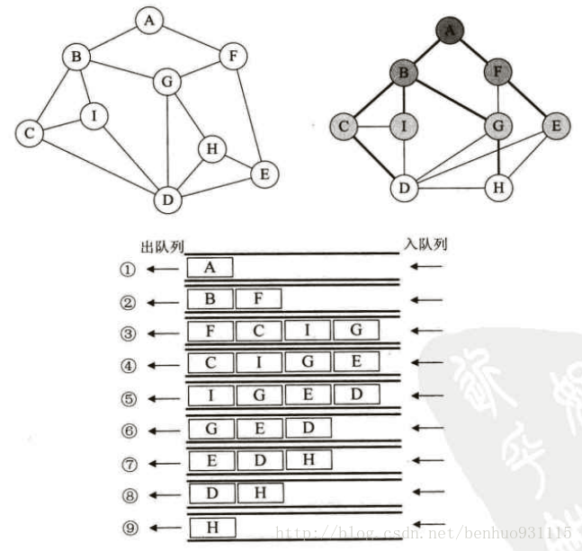
我们把上左图调整一下位置，形成有层间关系的类似树的结构。然后以队列的形式，当一个元素被遍历，则将它出队的同时，将它的未被遍历的邻接结点入队，直到队列中的全部元素都被遍历。
代码如下
/*
邻接矩阵存储的图的广度优先遍历
*/
public void BFSTraverse(){
ArrayDeque<Integer> queue = new ArrayDeque<>();
this.visited = new boolean[getNumVertex()];
for (int i = 0; i < numVertex; i++){
visited[i] = false;
}
for(int i = 0; i < numVertex; i++){
if (!visited[i]) {
queue.add(i);
}
while (!queue.isEmpty()){
int row = queue.remove();
visit(row);
for (int j = 0; j < numVertex; j++){
//如果存在这条边，且这条边的邻接点没有被访问过，且邻接点不在队列中，则将该邻接点入队
if ((edges[row][j] != 0 && edges[row][j] != INFINITY) && !visited[j] && !queue.contains(j)){
queue.add(j);
}
}
}
}
}
private void visit(int i){
System.out.println(vertexs[i].getData());
visited[i] = true;
}
}/*
邻接表存储的图的广度优先遍历
*/
public void BFSTraverse(){
ArrayDeque<Integer> queue = new ArrayDeque<>();
this.visited = new boolean[getNumVertex()];
for (int i = 0; i < getNumVertex(); i++){
visited[i] = false;
}
for (int i = 0; i < getNumVertex(); i++){
if (!visited[i]) {
queue.add(i);
}
while (!queue.isEmpty()){
int node = queue.remove();
visit(node);
EdgeL e = vertexs[node].getFirstEdge();
if (e != null && !queue.contains(e.getAdjvex()) && !visited[e.getAdjvex()]) {
queue.add(e.getAdjvex());
while (e != null && e.getNextEdge() != null && !queue.contains(e.getAdjvex()) && !visited[e.getAdjvex()]) {
queue.add(e.getAdjvex());
e = e.getNextEdge();
}
}
}
}
}
public void visit(int i){
System.out.println(vertexs[i].getData());
visited[i] = true;
}对比发现，DFS和BFS在时间复杂度上是一样的，仅仅是访问次序不同。深度优先更适合目标明确，以找到目标为目的的情况；广度优先更适合在不断扩大遍历范围时找到相对最优解的情况。
下面应该是最小生成树这一部分，但是研究了一天，发现大话数据结构这本书的图这部分写的实在是烂，难以下咽，所以后面将再起一篇博客，来记录后续部分，将会以Sedgewick版《算法》的风格来叙述。如果有人看到博客对后续有期待，请等我几天。